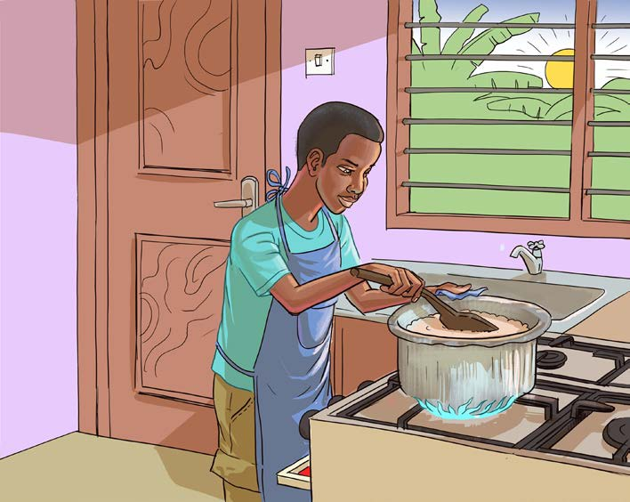

(a) Combustion produces energy for cooking, heating, and running various machines. For example, gas combustion in stoves provides energy for cooking food, as shown in Figure 2;

(b) Combustion is used in industries for various activities. It includes smelting iron and producing items such as steel bars and plastics. Fire is also used in smelting gold;
(c) The heat generated from the process combustion helps dry and preserve foods and crops; and
(d) The heat generated from combustion helps us during cold weather. For example, we can warm our bodies with heat from fire during cold weather as shown in Figure 3.